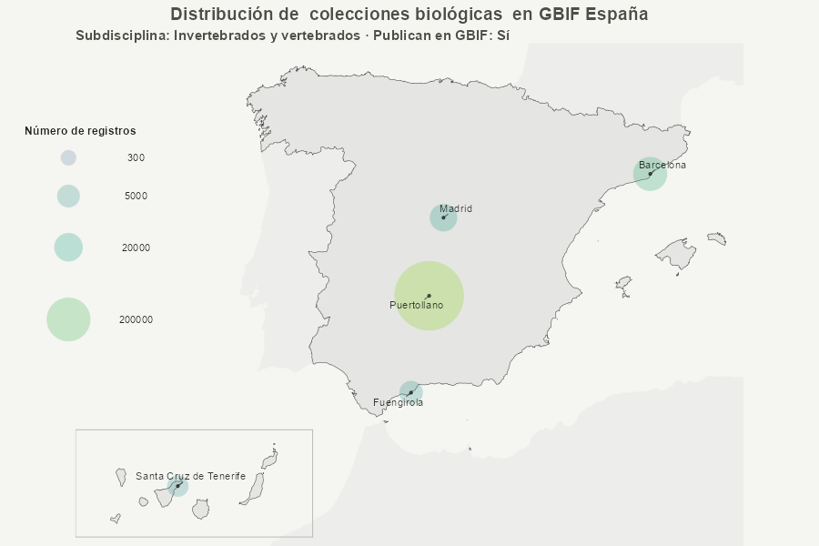

Generación de mapas con crear_mapa_simple()
crear-mapas.RmdIntroducción
Esta vignette muestra distintos ejemplos de mapas generados con la
función crear_mapa_simple() del paquete
metagesToolkit.
# Función para la exploración y visualización de datos de colecciones y bases de datos.
mapa <- crear_mapa_simple() # Genera una lista de R con 2 elementos
# Output
mapa$data_map # Muestra el data frame creado con los filtros aplicados
mapa$plot # Muestra el mapa creado con los filtros aplicadosEl objetivo es ilustrar cómo se pueden visualizar colecciones biológicas y bases de datos de biodiversidad en España mediante distintos parámetros de la función, sin entrar en detalles de edición cartográfica avanzada.
Datos de ejemplo
Para los ejemplos se utilizan datos extraídos del Registro de
colecciones mediante la función
extraer_colecciones_mapa()$data.
Mapa básico
Ejemplo mínimo de uso de crear_mapa_simple(), mostrando
la distribución espacial de todos los recursos del Registro.

Mapa solo colecciones zoológicas
Ejemplo de uso de
crear_mapa_simple(tipo_coleccion = "coleccion", disciplina = "Zoo"),
mostrando la distribución espacial de los recursos del Registro.

Mapa solo colecciones zoológicas publicadoras
Ejemplo de uso de
crear_mapa_simple(tipo_coleccion = "coleccion", disciplina = "Zoo", publican = T),
mostrando la distribución espacial de los recursos del Registro.

Mapa solo colecciones de invertebrados
Ejemplo de uso de
crear_mapa_simple(tipo_coleccion = "coleccion", subdisciplina = "Invertebrados"),
mostrando la distribución espacial de los recursos del Registro.

Mapa solo colecciones de invertebrados publicadoras
Ejemplo de uso de
crear_mapa_simple(tipo_coleccion = "coleccion", subdisciplina = "Invertebrados", publican = T),
mostrando la distribución espacial de los recursos del Registro.

Mapa solo colecciones de vertebrados
Ejemplo de uso de
crear_mapa_simple(tipo_coleccion = "coleccion", subdisciplina = "Vertebrados"),
mostrando la distribución espacial de los recursos del Registro.

Mapa solo colecciones de vertebrados publicadoras
Ejemplo de uso de
crear_mapa_simple(tipo_coleccion = "coleccion", subdisciplina = "Vertebrados", publican = T),
mostrando la distribución espacial de los recursos del Registro.

Mapa solo colecciones de invertebrados y vertebrados
Ejemplo de uso de
crear_mapa_simple(tipo_coleccion = "coleccion", subdisciplina = "Invertebrados y vertebrados"),
mostrando la distribución espacial de los recursos del Registro.

Mapa solo colecciones de invertebrados y vertebrados publicadoras
Ejemplo de uso de
crear_mapa_simple(tipo_coleccion = "coleccion", subdisciplina = "Invertebrados y vertebrados", publican = T),
mostrando la distribución espacial de los recursos del Registro.

Mapa solo colecciones botánicas
Ejemplo de uso de
crear_mapa_simple(tipo_coleccion = "coleccion", disciplina = "Bot"),
mostrando la distribución espacial de los recursos del Registro.

Mapa solo colecciones botánicas publicadoras
Ejemplo de uso de
crear_mapa_simple(tipo_coleccion = "coleccion", disciplina = "Bot", publican = T),
mostrando la distribución espacial de los recursos del Registro.

Mapa solo colecciones de plantas
Ejemplo de uso de
crear_mapa_simple(tipo_coleccion = "coleccion", subdisciplina = "Plant"),
mostrando la distribución espacial de los recursos del Registro.

Mapa solo colecciones de plantas publicadoras
Ejemplo de uso de
crear_mapa_simple(tipo_coleccion = "coleccion", subdisciplina = "Plant", publican = T),
mostrando la distribución espacial de los recursos del Registro.

Mapa solo colecciones de algas
Ejemplo de uso de
crear_mapa_simple(tipo_coleccion = "coleccion", subdisciplina = "Algas"),
mostrando la distribución espacial de los recursos del Registro.

Mapa solo colecciones de algas publicadoras
Ejemplo de uso de
crear_mapa_simple(tipo_coleccion = "coleccion", subdisciplina = "Algas", publican = T),
mostrando la distribución espacial de los recursos del Registro.

Mapa solo colecciones de hongos
Ejemplo de uso de
crear_mapa_simple(tipo_coleccion = "coleccion", subdisciplina = "Hong"),
mostrando la distribución espacial de los recursos del Registro.

Mapa solo colecciones de hongos publicadoras
Ejemplo de uso de
crear_mapa_simple(tipo_coleccion = "coleccion", subdisciplina = "Hong", publican = T),
mostrando la distribución espacial de los recursos del Registro.

Mapa solo colecciones microbiológicas
Ejemplo de uso de
crear_mapa_simple(tipo_coleccion = "coleccion", disciplina = "Micro"),
mostrando la distribución espacial de los recursos del Registro.

Mapa solo colecciones microbiológicas publicadoras
Ejemplo de uso de
crear_mapa_simple(tipo_coleccion = "coleccion", disciplina = "Micro", publican = T),
mostrando la distribución espacial de los recursos del Registro.

Mapa solo colecciones micológicas
Ejemplo de uso de
crear_mapa_simple(tipo_coleccion = "coleccion", disciplina = "Mico"),
mostrando la distribución espacial de los recursos del Registro.

Mapa solo colecciones micológicas publicadoras
Ejemplo de uso de
crear_mapa_simple(tipo_coleccion = "coleccion", disciplina = "Mico", publican = T),
mostrando la distribución espacial de los recursos del Registro.
Mapa solo colecciones paleontológicas
Ejemplo de uso de
crear_mapa_simple(tipo_coleccion = "coleccion", disciplina = "Pale"),
mostrando la distribución espacial de los recursos del Registro.

Mapa solo colecciones paleontológicas publicadoras
Ejemplo de uso de
crear_mapa_simple(tipo_coleccion = "coleccion", disciplina = "Pale", publican = T),
mostrando la distribución espacial de los recursos del Registro.

Mapa solo colecciones mixtas
Ejemplo de uso de
crear_mapa_simple(tipo_coleccion = "coleccion", disciplina = "Mix"),
mostrando la distribución espacial de los recursos del Registro.

Mapa solo colecciones mixtas publicadoras
Ejemplo de uso de
crear_mapa_simple(tipo_coleccion = "coleccion", disciplina = "Mix", publican = T),
mostrando la distribución espacial de los recursos del Registro.

Mapa facetado de bases de datos por disciplina (publicadoras)
Ejemplo de uso de
crear_mapa_simple(tipo_coleccion = "base de datos", facet = "disciplina_def", publican = T),
mostrando la distribución espacial de los recursos del Registro,
facetada por disciplina.

Mapa facetado de bases de datos por disciplina (no publicadoras)
Ejemplo de uso de
crear_mapa_simple(tipo_coleccion = "base de datos", facet = "disciplina_def", publican = F),
mostrando la distribución espacial de los recursos del Registro,
facetada por disciplina.
(Si no hay imagen es porque no hay datos para esta categoría)

Acceso a los datos usados en el mapa
La función crear_mapa_simple() devuelve una lista que
incluye los datos filtrados utilizados para generar el mapa, lo que
permite reutilizarlos en tablas o análisis posteriores.
res <- crear_mapa_simple(disciplina = "Zoo")
head(res$data)Notas técnicas
-
crear_mapa_simple()devuelve una lista con al menos:-
plot: objetoggplot2 -
data: datos filtrados utilizados en el mapa
-
- El mapa base de España se genera automáticamente y trata de forma específica el desplazamiento de Canarias.
Referencias
- Documentación de la función:
?crear_mapa_simple - Sitio pkgdown del paquete metagesToolkit